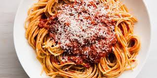

Spaghetti Recipe

Spaghetti recipe
Who doesn't love a warm plate of classic spaghetti! One of my families all time favorite meals and sure to be loved by everyone.
Ingredients
- ½ lb Ground beef I use the Prego sauce with meat so I only use a half pound in my recipe.
- 1 small onion diced
- 1 tbsp garlic minced or powder
- 1 tbsp salt
- 1 tbsp pepper
- 1 tbsp parsley
- 2 O of noodles when you place your thumb and pointer finger together to form an OK.
- 4 cups spaghetti sauce
Steps
- Heat pan on medium high heat.
- Finley dice your onion.
- In your heated pan place ground beef, diced onion.
- Brown ground beef until all pink is gone and the onion is translucent.
- In a large pot place in sauce and all seasonings.
- Once beef is fully cooked, drain and mix into sauce.
- Let sauce heat until all flavors are combined. (for a richer flavor let stew for several hours)
- Bring water to a rolling boil in a large pot.
- Cook noodles until tender then drain.
- Once pasta is drained serve warm and top with Parmesan cheese.